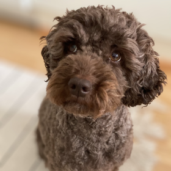

About me
I kept studying people."
I was eager to try new things from an early age. I had many hobbies: various sports, visual arts, music — I wrote poetry and recorded my own radio programmes in English on a cassette recorder. I was interested in a bit of everything. But what fascinated me most was why we humans behave the way we do.
At some point, new dimensions entered my life when my mother bought us a Commodore 128. Together we typed a screensaver from the manual and got it running on the living-room TV. My brother became a computer technician. I kept studying people.
My interest in people led me for many years to work with children with special needs and their families. I discovered how small things can have a truly great impact. When you change one thing, everything might change. That one thing can be as small as a single word. I loved my work with children and families.
A developer's mindset later took me to other roles: if something is not working, I start looking at what I could do differently — and then I do it.
Trying new things and the joy of learning still keeps me moving. I always find something new to explore — whether that's university studies, colourwork knitting, or artificial intelligence.
In recent years I have been able to combine marketing and communications with everything I have always cared about: understanding people, creativity, writing, continuous learning, and technology. Do get in touch if you think my skills could be of use to you.
In my free time I prefer to move in nature with my dog Alma or go cross-country skiing. I unwind by singing, listening to audiobooks, and exploring topics from all walks of life. Family is the unquestionable number one on my list of what matters most.
Johanna


I am cheerful, talkative, and enthusiastically chatty — and at the same time reflective, analytical, and goal-oriented, all in happy coexistence. An unusual combination, perhaps, but that is exactly what makes me who I am.